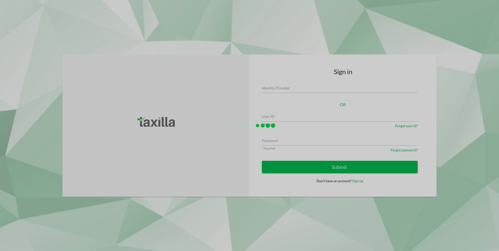
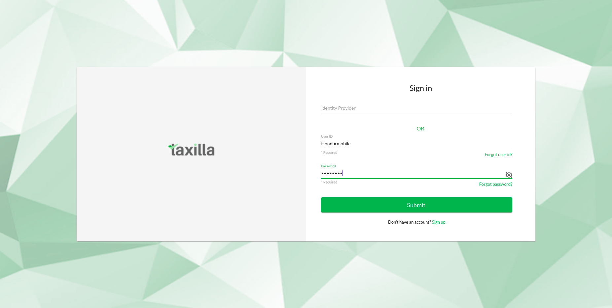
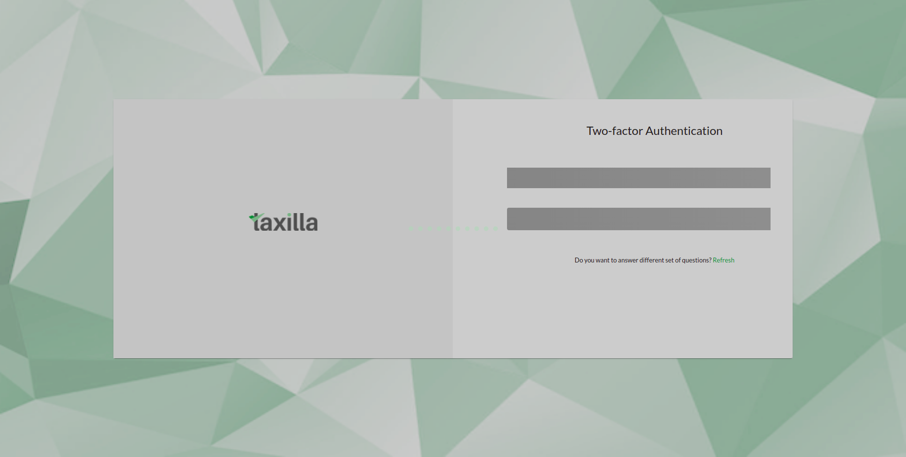
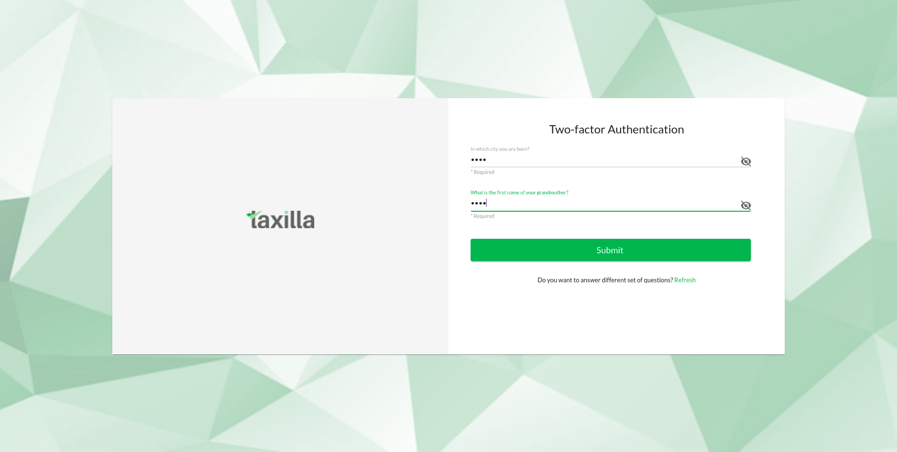
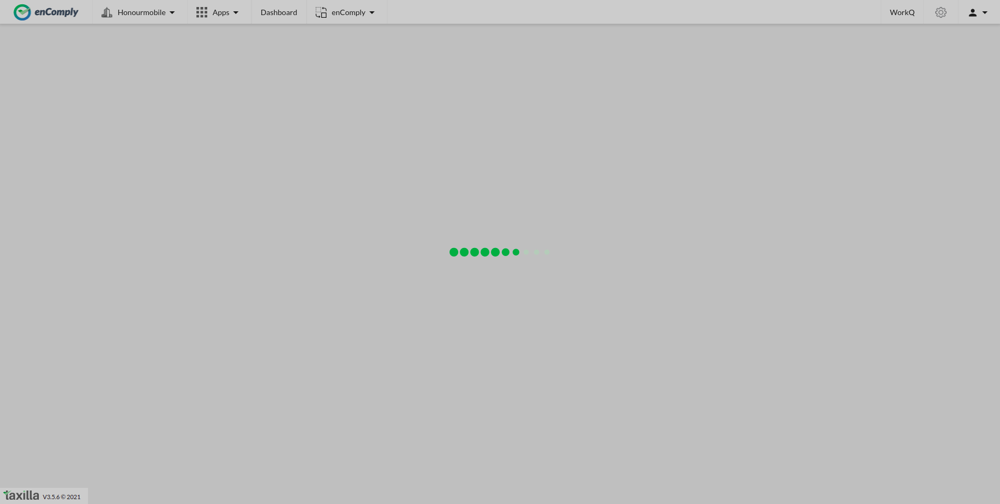
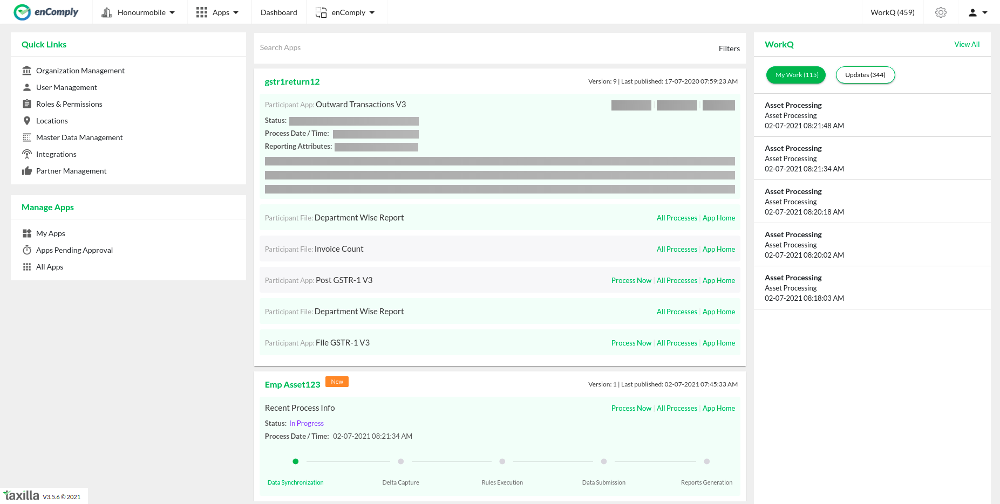
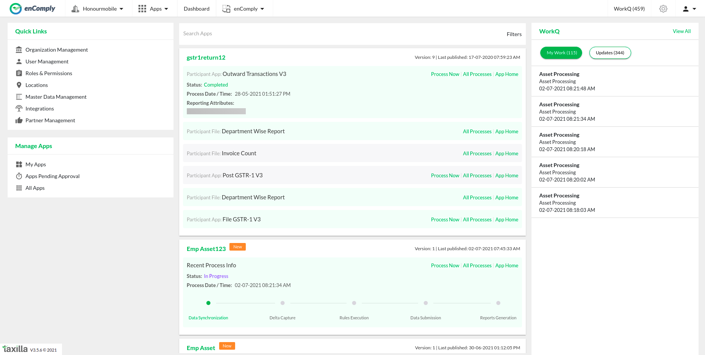

Total Tests
Total Steps
Total Time Taken (Current Run)
0h 0m 43s+670ms
Total Time Taken (Overall)
0h 0m 43s+670ms
Start
2021-07-15 17:00:11
End
2021-07-15 17:00:54
Pass Percentage
Environment
| Param | Value |
|---|---|
| OS | Linux |
| User Name | aknandigam |
| Java Version | 1.8.0_292 |
| Environment | QA |
| Host Name | AIPLLTH321 |
| Selenium Version | 2.53.0 |
Categories
| Name |
|---|
Tests
-
Partner Manegement TestCases fail2021-07-15 17:00:11 2021-07-15 17:00:54 0h 0m 43s+163ms
Status Timestamp Details 17:00:54 com.relevantcodes.extentreports.ExtentTestInterruptedException: Close was called before test could end safely using EndTest. at com.relevantcodes.extentreports.Report.terminate(Report.java:401) at com.relevantcodes.extentreports.ExtentReports.close(ExtentReports.java:702) at com.selenium.DataDriven.TestCases.Partnermanagment.testb(Partnermanagment.java:52) at sun.reflect.NativeMethodAccessorImpl.invoke0(Native Method) at sun.reflect.NativeMethodAccessorImpl.invoke(NativeMethodAccessorImpl.java:62) at sun.reflect.DelegatingMethodAccessorImpl.invoke(DelegatingMethodAccessorImpl.java:43) at java.lang.reflect.Method.invoke(Method.java:498) at org.testng.internal.MethodInvocationHelper.invokeMethod(MethodInvocationHelper.java:104) at org.testng.internal.Invoker.invokeConfigurationMethod(Invoker.java:515) at org.testng.internal.Invoker.invokeConfigurations(Invoker.java:217) at org.testng.internal.Invoker.invokeConfigurations(Invoker.java:144) at org.testng.internal.TestMethodWorker.invokeAfterClassMethods(TestMethodWorker.java:217) at org.testng.internal.TestMethodWorker.run(TestMethodWorker.java:115) at org.testng.TestRunner.privateRun(TestRunner.java:756) at org.testng.TestRunner.run(TestRunner.java:610) at org.testng.SuiteRunner.runTest(SuiteRunner.java:387) at org.testng.SuiteRunner.runSequentially(SuiteRunner.java:382) at org.testng.SuiteRunner.privateRun(SuiteRunner.java:340) at org.testng.SuiteRunner.run(SuiteRunner.java:289) at org.testng.SuiteRunnerWorker.runSuite(SuiteRunnerWorker.java:52) at org.testng.SuiteRunnerWorker.run(SuiteRunnerWorker.java:86) at org.testng.TestNG.runSuitesSequentially(TestNG.java:1293) at org.testng.TestNG.runSuitesLocally(TestNG.java:1218) at org.testng.TestNG.runSuites(TestNG.java:1133) at org.testng.TestNG.run(TestNG.java:1104) at org.testng.remote.AbstractRemoteTestNG.run(AbstractRemoteTestNG.java:132) at org.testng.remote.RemoteTestNG.initAndRun(RemoteTestNG.java:230) at org.testng.remote.RemoteTestNG.main(RemoteTestNG.java:76)
-
1)Verifying Partner Management Menuitem is Displaying or not fail2021-07-15 17:00:11 2021-07-15 17:00:54 0h 0m 42s+576ms
Status Timestamp Details 17:00:11 Start the test 17:00:11 {Security_Ans2=test, Username=Honourmobile, Security_Ans1=test, Password=Test@123, Runmode=Y, Browser=Chrome} 17:00:13 Browser has oppened 17:00:19 URL has oppened 17:00:19 Trying to login:Honourmobile,Test@123 17:00:22 Verifying whether element is enabled/clickable 17:00:22 Text-box is enabled 17:00:23 Screenshot->  17:00:23 Verifying whether element is enabled/clickable 17:00:23 Text-box is enabled 17:00:23 Screenshot-> 
17:00:24 Verifying whether element is enabled/clickable 17:00:24 Element is clickable 17:00:24 Screenshot->  17:00:28 First level Login is succesfull 17:00:29 Screenshot->  17:00:30 Screenshot-> 
17:00:30 Trying to enter security answers:test,test 17:00:30 Verifying whether element is enabled/clickable 17:00:30 Text-box is enabled 17:00:30 Screenshot-> 17:00:31 Verifying whether element is enabled/clickable 17:00:31 Text-box is enabled 17:00:31 Screenshot->  17:00:31 Verifying whether element is enabled/clickable 17:00:31 Element is clickable 17:00:31 Screenshot-> 17:00:39 Login succesfully 17:00:39 Screenshot->  17:00:47 Checking whether PartnerManagment menu item is displaying or not 17:00:47 PartnerManagment menu item is displaying 17:00:48 Screenshot->  17:00:54 com.relevantcodes.extentreports.ExtentTestInterruptedException: Close was called before test could end safely using EndTest. at com.relevantcodes.extentreports.Report.terminate(Report.java:401) at com.relevantcodes.extentreports.ExtentReports.close(ExtentReports.java:702) at com.selenium.DataDriven.TestCases.Partnermanagment.testb(Partnermanagment.java:52) at sun.reflect.NativeMethodAccessorImpl.invoke0(Native Method) at sun.reflect.NativeMethodAccessorImpl.invoke(NativeMethodAccessorImpl.java:62) at sun.reflect.DelegatingMethodAccessorImpl.invoke(DelegatingMethodAccessorImpl.java:43) at java.lang.reflect.Method.invoke(Method.java:498) at org.testng.internal.MethodInvocationHelper.invokeMethod(MethodInvocationHelper.java:104) at org.testng.internal.Invoker.invokeConfigurationMethod(Invoker.java:515) at org.testng.internal.Invoker.invokeConfigurations(Invoker.java:217) at org.testng.internal.Invoker.invokeConfigurations(Invoker.java:144) at org.testng.internal.TestMethodWorker.invokeAfterClassMethods(TestMethodWorker.java:217) at org.testng.internal.TestMethodWorker.run(TestMethodWorker.java:115) at org.testng.TestRunner.privateRun(TestRunner.java:756) at org.testng.TestRunner.run(TestRunner.java:610) at org.testng.SuiteRunner.runTest(SuiteRunner.java:387) at org.testng.SuiteRunner.runSequentially(SuiteRunner.java:382) at org.testng.SuiteRunner.privateRun(SuiteRunner.java:340) at org.testng.SuiteRunner.run(SuiteRunner.java:289) at org.testng.SuiteRunnerWorker.runSuite(SuiteRunnerWorker.java:52) at org.testng.SuiteRunnerWorker.run(SuiteRunnerWorker.java:86) at org.testng.TestNG.runSuitesSequentially(TestNG.java:1293) at org.testng.TestNG.runSuitesLocally(TestNG.java:1218) at org.testng.TestNG.runSuites(TestNG.java:1133) at org.testng.TestNG.run(TestNG.java:1104) at org.testng.remote.AbstractRemoteTestNG.run(AbstractRemoteTestNG.java:132) at org.testng.remote.RemoteTestNG.initAndRun(RemoteTestNG.java:230) at org.testng.remote.RemoteTestNG.main(RemoteTestNG.java:76)
-
2)Verifying whether all the menu items are displaying in Partner details page or not fail2021-07-15 17:00:48 2021-07-15 17:00:54 0h 0m 5s+961ms
Status Timestamp Details 17:00:48 Start the test 17:00:48 {Security_Ans2=test, Username=Honourmobile, Security_Ans1=test, Password=Test@123, Runmode=Y, Browser=Chrome} 17:00:48 Clicking on PartnerMangement Menu Item 17:00:49 Verifying whether element is enabled/clickable 17:00:49 Element is clickable 17:00:49 Screenshot->  17:00:53 Verifying Partner details Page 17:00:53 AssociatePartner menu item is displaying 17:00:53 Screenshot-> 
17:00:53 ManagePartner menu item is displaying 17:00:53 Screenshot-> 17:00:53 Add Partner button are displaying 17:00:53 Screenshot-> 17:00:54 com.relevantcodes.extentreports.ExtentTestInterruptedException: Close was called before test could end safely using EndTest. at com.relevantcodes.extentreports.Report.terminate(Report.java:401) at com.relevantcodes.extentreports.ExtentReports.close(ExtentReports.java:702) at com.selenium.DataDriven.TestCases.Partnermanagment.testb(Partnermanagment.java:52) at sun.reflect.NativeMethodAccessorImpl.invoke0(Native Method) at sun.reflect.NativeMethodAccessorImpl.invoke(NativeMethodAccessorImpl.java:62) at sun.reflect.DelegatingMethodAccessorImpl.invoke(DelegatingMethodAccessorImpl.java:43) at java.lang.reflect.Method.invoke(Method.java:498) at org.testng.internal.MethodInvocationHelper.invokeMethod(MethodInvocationHelper.java:104) at org.testng.internal.Invoker.invokeConfigurationMethod(Invoker.java:515) at org.testng.internal.Invoker.invokeConfigurations(Invoker.java:217) at org.testng.internal.Invoker.invokeConfigurations(Invoker.java:144) at org.testng.internal.TestMethodWorker.invokeAfterClassMethods(TestMethodWorker.java:217) at org.testng.internal.TestMethodWorker.run(TestMethodWorker.java:115) at org.testng.TestRunner.privateRun(TestRunner.java:756) at org.testng.TestRunner.run(TestRunner.java:610) at org.testng.SuiteRunner.runTest(SuiteRunner.java:387) at org.testng.SuiteRunner.runSequentially(SuiteRunner.java:382) at org.testng.SuiteRunner.privateRun(SuiteRunner.java:340) at org.testng.SuiteRunner.run(SuiteRunner.java:289) at org.testng.SuiteRunnerWorker.runSuite(SuiteRunnerWorker.java:52) at org.testng.SuiteRunnerWorker.run(SuiteRunnerWorker.java:86) at org.testng.TestNG.runSuitesSequentially(TestNG.java:1293) at org.testng.TestNG.runSuitesLocally(TestNG.java:1218) at org.testng.TestNG.runSuites(TestNG.java:1133) at org.testng.TestNG.run(TestNG.java:1104) at org.testng.remote.AbstractRemoteTestNG.run(AbstractRemoteTestNG.java:132) at org.testng.remote.RemoteTestNG.initAndRun(RemoteTestNG.java:230) at org.testng.remote.RemoteTestNG.main(RemoteTestNG.java:76)
-
3)Verifying whether Non Service provider organization is getting displayed under Associate Partners fail2021-07-15 17:00:53 2021-07-15 17:00:54 0h 0m 0s+561ms
Status Timestamp Details 17:00:53 Start the test 17:00:53 {Security_Ans2=test, Username=Honourmobile, Security_Ans1=test, Password=Test@123, Runmode=Y, Browser=Chrome} 17:00:53 Test case is skipped as Runmode is N 17:00:54 com.relevantcodes.extentreports.ExtentTestInterruptedException: Close was called before test could end safely using EndTest. at com.relevantcodes.extentreports.Report.terminate(Report.java:401) at com.relevantcodes.extentreports.ExtentReports.close(ExtentReports.java:702) at com.selenium.DataDriven.TestCases.Partnermanagment.testb(Partnermanagment.java:52) at sun.reflect.NativeMethodAccessorImpl.invoke0(Native Method) at sun.reflect.NativeMethodAccessorImpl.invoke(NativeMethodAccessorImpl.java:62) at sun.reflect.DelegatingMethodAccessorImpl.invoke(DelegatingMethodAccessorImpl.java:43) at java.lang.reflect.Method.invoke(Method.java:498) at org.testng.internal.MethodInvocationHelper.invokeMethod(MethodInvocationHelper.java:104) at org.testng.internal.Invoker.invokeConfigurationMethod(Invoker.java:515) at org.testng.internal.Invoker.invokeConfigurations(Invoker.java:217) at org.testng.internal.Invoker.invokeConfigurations(Invoker.java:144) at org.testng.internal.TestMethodWorker.invokeAfterClassMethods(TestMethodWorker.java:217) at org.testng.internal.TestMethodWorker.run(TestMethodWorker.java:115) at org.testng.TestRunner.privateRun(TestRunner.java:756) at org.testng.TestRunner.run(TestRunner.java:610) at org.testng.SuiteRunner.runTest(SuiteRunner.java:387) at org.testng.SuiteRunner.runSequentially(SuiteRunner.java:382) at org.testng.SuiteRunner.privateRun(SuiteRunner.java:340) at org.testng.SuiteRunner.run(SuiteRunner.java:289) at org.testng.SuiteRunnerWorker.runSuite(SuiteRunnerWorker.java:52) at org.testng.SuiteRunnerWorker.run(SuiteRunnerWorker.java:86) at org.testng.TestNG.runSuitesSequentially(TestNG.java:1293) at org.testng.TestNG.runSuitesLocally(TestNG.java:1218) at org.testng.TestNG.runSuites(TestNG.java:1133) at org.testng.TestNG.run(TestNG.java:1104) at org.testng.remote.AbstractRemoteTestNG.run(AbstractRemoteTestNG.java:132) at org.testng.remote.RemoteTestNG.initAndRun(RemoteTestNG.java:230) at org.testng.remote.RemoteTestNG.main(RemoteTestNG.java:76)
-
4)Verifying whether we are able to associate organization as partner fail2021-07-15 17:00:53 2021-07-15 17:00:54 0h 0m 0s+479ms
Status Timestamp Details 17:00:53 Start the test 17:00:53 {Security_Ans2=test, Username=Honourmobile, Security_Ans1=test, Password=Test@123, Runmode=Y, Browser=Chrome} 17:00:53 Test case is skipped as Runmode is N 17:00:54 com.relevantcodes.extentreports.ExtentTestInterruptedException: Close was called before test could end safely using EndTest. at com.relevantcodes.extentreports.Report.terminate(Report.java:401) at com.relevantcodes.extentreports.ExtentReports.close(ExtentReports.java:702) at com.selenium.DataDriven.TestCases.Partnermanagment.testb(Partnermanagment.java:52) at sun.reflect.NativeMethodAccessorImpl.invoke0(Native Method) at sun.reflect.NativeMethodAccessorImpl.invoke(NativeMethodAccessorImpl.java:62) at sun.reflect.DelegatingMethodAccessorImpl.invoke(DelegatingMethodAccessorImpl.java:43) at java.lang.reflect.Method.invoke(Method.java:498) at org.testng.internal.MethodInvocationHelper.invokeMethod(MethodInvocationHelper.java:104) at org.testng.internal.Invoker.invokeConfigurationMethod(Invoker.java:515) at org.testng.internal.Invoker.invokeConfigurations(Invoker.java:217) at org.testng.internal.Invoker.invokeConfigurations(Invoker.java:144) at org.testng.internal.TestMethodWorker.invokeAfterClassMethods(TestMethodWorker.java:217) at org.testng.internal.TestMethodWorker.run(TestMethodWorker.java:115) at org.testng.TestRunner.privateRun(TestRunner.java:756) at org.testng.TestRunner.run(TestRunner.java:610) at org.testng.SuiteRunner.runTest(SuiteRunner.java:387) at org.testng.SuiteRunner.runSequentially(SuiteRunner.java:382) at org.testng.SuiteRunner.privateRun(SuiteRunner.java:340) at org.testng.SuiteRunner.run(SuiteRunner.java:289) at org.testng.SuiteRunnerWorker.runSuite(SuiteRunnerWorker.java:52) at org.testng.SuiteRunnerWorker.run(SuiteRunnerWorker.java:86) at org.testng.TestNG.runSuitesSequentially(TestNG.java:1293) at org.testng.TestNG.runSuitesLocally(TestNG.java:1218) at org.testng.TestNG.runSuites(TestNG.java:1133) at org.testng.TestNG.run(TestNG.java:1104) at org.testng.remote.AbstractRemoteTestNG.run(AbstractRemoteTestNG.java:132) at org.testng.remote.RemoteTestNG.initAndRun(RemoteTestNG.java:230) at org.testng.remote.RemoteTestNG.main(RemoteTestNG.java:76)
-
5)Verifying whether proper error message is getting displayed when trying to add already Partner fail2021-07-15 17:00:54 2021-07-15 17:00:54 0h 0m 0s+434ms
Status Timestamp Details 17:00:54 Start the test 17:00:54 {Security_Ans2=test, Username=Honourmobile, Security_Ans1=test, Password=Test@123, Runmode=Y, Browser=Chrome} 17:00:54 Test case is skipped as Runmode is N 17:00:54 com.relevantcodes.extentreports.ExtentTestInterruptedException: Close was called before test could end safely using EndTest. at com.relevantcodes.extentreports.Report.terminate(Report.java:401) at com.relevantcodes.extentreports.ExtentReports.close(ExtentReports.java:702) at com.selenium.DataDriven.TestCases.Partnermanagment.testb(Partnermanagment.java:52) at sun.reflect.NativeMethodAccessorImpl.invoke0(Native Method) at sun.reflect.NativeMethodAccessorImpl.invoke(NativeMethodAccessorImpl.java:62) at sun.reflect.DelegatingMethodAccessorImpl.invoke(DelegatingMethodAccessorImpl.java:43) at java.lang.reflect.Method.invoke(Method.java:498) at org.testng.internal.MethodInvocationHelper.invokeMethod(MethodInvocationHelper.java:104) at org.testng.internal.Invoker.invokeConfigurationMethod(Invoker.java:515) at org.testng.internal.Invoker.invokeConfigurations(Invoker.java:217) at org.testng.internal.Invoker.invokeConfigurations(Invoker.java:144) at org.testng.internal.TestMethodWorker.invokeAfterClassMethods(TestMethodWorker.java:217) at org.testng.internal.TestMethodWorker.run(TestMethodWorker.java:115) at org.testng.TestRunner.privateRun(TestRunner.java:756) at org.testng.TestRunner.run(TestRunner.java:610) at org.testng.SuiteRunner.runTest(SuiteRunner.java:387) at org.testng.SuiteRunner.runSequentially(SuiteRunner.java:382) at org.testng.SuiteRunner.privateRun(SuiteRunner.java:340) at org.testng.SuiteRunner.run(SuiteRunner.java:289) at org.testng.SuiteRunnerWorker.runSuite(SuiteRunnerWorker.java:52) at org.testng.SuiteRunnerWorker.run(SuiteRunnerWorker.java:86) at org.testng.TestNG.runSuitesSequentially(TestNG.java:1293) at org.testng.TestNG.runSuitesLocally(TestNG.java:1218) at org.testng.TestNG.runSuites(TestNG.java:1133) at org.testng.TestNG.run(TestNG.java:1104) at org.testng.remote.AbstractRemoteTestNG.run(AbstractRemoteTestNG.java:132) at org.testng.remote.RemoteTestNG.initAndRun(RemoteTestNG.java:230) at org.testng.remote.RemoteTestNG.main(RemoteTestNG.java:76)
-
6)Verifying whether we are able to reject the partnership before any action is performed on the partnership request from Partner org fail2021-07-15 17:00:54 2021-07-15 17:00:54 0h 0m 0s+384ms
Status Timestamp Details 17:00:54 Start the test 17:00:54 {Security_Ans2=test, Username=Honourmobile, Security_Ans1=test, Password=Test@123, Runmode=Y, Browser=Chrome} 17:00:54 Test case is skipped as Runmode is N 17:00:54 com.relevantcodes.extentreports.ExtentTestInterruptedException: Close was called before test could end safely using EndTest. at com.relevantcodes.extentreports.Report.terminate(Report.java:401) at com.relevantcodes.extentreports.ExtentReports.close(ExtentReports.java:702) at com.selenium.DataDriven.TestCases.Partnermanagment.testb(Partnermanagment.java:52) at sun.reflect.NativeMethodAccessorImpl.invoke0(Native Method) at sun.reflect.NativeMethodAccessorImpl.invoke(NativeMethodAccessorImpl.java:62) at sun.reflect.DelegatingMethodAccessorImpl.invoke(DelegatingMethodAccessorImpl.java:43) at java.lang.reflect.Method.invoke(Method.java:498) at org.testng.internal.MethodInvocationHelper.invokeMethod(MethodInvocationHelper.java:104) at org.testng.internal.Invoker.invokeConfigurationMethod(Invoker.java:515) at org.testng.internal.Invoker.invokeConfigurations(Invoker.java:217) at org.testng.internal.Invoker.invokeConfigurations(Invoker.java:144) at org.testng.internal.TestMethodWorker.invokeAfterClassMethods(TestMethodWorker.java:217) at org.testng.internal.TestMethodWorker.run(TestMethodWorker.java:115) at org.testng.TestRunner.privateRun(TestRunner.java:756) at org.testng.TestRunner.run(TestRunner.java:610) at org.testng.SuiteRunner.runTest(SuiteRunner.java:387) at org.testng.SuiteRunner.runSequentially(SuiteRunner.java:382) at org.testng.SuiteRunner.privateRun(SuiteRunner.java:340) at org.testng.SuiteRunner.run(SuiteRunner.java:289) at org.testng.SuiteRunnerWorker.runSuite(SuiteRunnerWorker.java:52) at org.testng.SuiteRunnerWorker.run(SuiteRunnerWorker.java:86) at org.testng.TestNG.runSuitesSequentially(TestNG.java:1293) at org.testng.TestNG.runSuitesLocally(TestNG.java:1218) at org.testng.TestNG.runSuites(TestNG.java:1133) at org.testng.TestNG.run(TestNG.java:1104) at org.testng.remote.AbstractRemoteTestNG.run(AbstractRemoteTestNG.java:132) at org.testng.remote.RemoteTestNG.initAndRun(RemoteTestNG.java:230) at org.testng.remote.RemoteTestNG.main(RemoteTestNG.java:76)
-
7)Verifying whether WQ is getting generated at partner org for partnership approval and also partnership related record is getting added at Manage Partners Tab fail2021-07-15 17:00:54 2021-07-15 17:00:54 0h 0m 0s+336ms
Status Timestamp Details 17:00:54 Start the test 17:00:54 {PatnerPassword=Test@2233, Runmode=Y, OrgPassword=Test@123, PatnerUsername=searchorg, OrgSecurity_Ans2=test, PatnerSecurity_Ans2=test, Browser=Chrome, OrgSecurity_Ans1=test, PatnerSecurity_Ans1=test, OrgUsername=Honourmobile} 17:00:54 Test case is skipped as Runmode is N 17:00:54 com.relevantcodes.extentreports.ExtentTestInterruptedException: Close was called before test could end safely using EndTest. at com.relevantcodes.extentreports.Report.terminate(Report.java:401) at com.relevantcodes.extentreports.ExtentReports.close(ExtentReports.java:702) at com.selenium.DataDriven.TestCases.Partnermanagment.testb(Partnermanagment.java:52) at sun.reflect.NativeMethodAccessorImpl.invoke0(Native Method) at sun.reflect.NativeMethodAccessorImpl.invoke(NativeMethodAccessorImpl.java:62) at sun.reflect.DelegatingMethodAccessorImpl.invoke(DelegatingMethodAccessorImpl.java:43) at java.lang.reflect.Method.invoke(Method.java:498) at org.testng.internal.MethodInvocationHelper.invokeMethod(MethodInvocationHelper.java:104) at org.testng.internal.Invoker.invokeConfigurationMethod(Invoker.java:515) at org.testng.internal.Invoker.invokeConfigurations(Invoker.java:217) at org.testng.internal.Invoker.invokeConfigurations(Invoker.java:144) at org.testng.internal.TestMethodWorker.invokeAfterClassMethods(TestMethodWorker.java:217) at org.testng.internal.TestMethodWorker.run(TestMethodWorker.java:115) at org.testng.TestRunner.privateRun(TestRunner.java:756) at org.testng.TestRunner.run(TestRunner.java:610) at org.testng.SuiteRunner.runTest(SuiteRunner.java:387) at org.testng.SuiteRunner.runSequentially(SuiteRunner.java:382) at org.testng.SuiteRunner.privateRun(SuiteRunner.java:340) at org.testng.SuiteRunner.run(SuiteRunner.java:289) at org.testng.SuiteRunnerWorker.runSuite(SuiteRunnerWorker.java:52) at org.testng.SuiteRunnerWorker.run(SuiteRunnerWorker.java:86) at org.testng.TestNG.runSuitesSequentially(TestNG.java:1293) at org.testng.TestNG.runSuitesLocally(TestNG.java:1218) at org.testng.TestNG.runSuites(TestNG.java:1133) at org.testng.TestNG.run(TestNG.java:1104) at org.testng.remote.AbstractRemoteTestNG.run(AbstractRemoteTestNG.java:132) at org.testng.remote.RemoteTestNG.initAndRun(RemoteTestNG.java:230) at org.testng.remote.RemoteTestNG.main(RemoteTestNG.java:76)
-
8)Verifying whether Partner org user is able to reject the partnership approval from WQ,once rejected related record is getting deleted in main org fail2021-07-15 17:00:54 2021-07-15 17:00:54 0h 0m 0s+295ms
Status Timestamp Details 17:00:54 Start the test 17:00:54 {PatnerPassword=Test@2233, Runmode=Y, OrgPassword=Test@123, PatnerUsername=searchorg, OrgSecurity_Ans2=test, PatnerSecurity_Ans2=test, Browser=Chrome, OrgSecurity_Ans1=test, PatnerSecurity_Ans1=test, OrgUsername=Honourmobile} 17:00:54 Test case is skipped as Runmode is N 17:00:54 com.relevantcodes.extentreports.ExtentTestInterruptedException: Close was called before test could end safely using EndTest. at com.relevantcodes.extentreports.Report.terminate(Report.java:401) at com.relevantcodes.extentreports.ExtentReports.close(ExtentReports.java:702) at com.selenium.DataDriven.TestCases.Partnermanagment.testb(Partnermanagment.java:52) at sun.reflect.NativeMethodAccessorImpl.invoke0(Native Method) at sun.reflect.NativeMethodAccessorImpl.invoke(NativeMethodAccessorImpl.java:62) at sun.reflect.DelegatingMethodAccessorImpl.invoke(DelegatingMethodAccessorImpl.java:43) at java.lang.reflect.Method.invoke(Method.java:498) at org.testng.internal.MethodInvocationHelper.invokeMethod(MethodInvocationHelper.java:104) at org.testng.internal.Invoker.invokeConfigurationMethod(Invoker.java:515) at org.testng.internal.Invoker.invokeConfigurations(Invoker.java:217) at org.testng.internal.Invoker.invokeConfigurations(Invoker.java:144) at org.testng.internal.TestMethodWorker.invokeAfterClassMethods(TestMethodWorker.java:217) at org.testng.internal.TestMethodWorker.run(TestMethodWorker.java:115) at org.testng.TestRunner.privateRun(TestRunner.java:756) at org.testng.TestRunner.run(TestRunner.java:610) at org.testng.SuiteRunner.runTest(SuiteRunner.java:387) at org.testng.SuiteRunner.runSequentially(SuiteRunner.java:382) at org.testng.SuiteRunner.privateRun(SuiteRunner.java:340) at org.testng.SuiteRunner.run(SuiteRunner.java:289) at org.testng.SuiteRunnerWorker.runSuite(SuiteRunnerWorker.java:52) at org.testng.SuiteRunnerWorker.run(SuiteRunnerWorker.java:86) at org.testng.TestNG.runSuitesSequentially(TestNG.java:1293) at org.testng.TestNG.runSuitesLocally(TestNG.java:1218) at org.testng.TestNG.runSuites(TestNG.java:1133) at org.testng.TestNG.run(TestNG.java:1104) at org.testng.remote.AbstractRemoteTestNG.run(AbstractRemoteTestNG.java:132) at org.testng.remote.RemoteTestNG.initAndRun(RemoteTestNG.java:230) at org.testng.remote.RemoteTestNG.main(RemoteTestNG.java:76)
-
9)Verifying whether proper error message is getting displayed when we try to access the WQ for which rejection action is already performed fail2021-07-15 17:00:54 2021-07-15 17:00:54 0h 0m 0s+250ms
Status Timestamp Details 17:00:54 Start the test 17:00:54 {PatnerPassword=Test@2233, Runmode=Y, OrgPassword=Test@123, PatnerUsername=searchorg, OrgSecurity_Ans2=test, PatnerSecurity_Ans2=test, Browser=Chrome, OrgSecurity_Ans1=test, PatnerSecurity_Ans1=test, OrgUsername=Honourmobile} 17:00:54 Test case is skipped as Runmode is N 17:00:54 com.relevantcodes.extentreports.ExtentTestInterruptedException: Close was called before test could end safely using EndTest. at com.relevantcodes.extentreports.Report.terminate(Report.java:401) at com.relevantcodes.extentreports.ExtentReports.close(ExtentReports.java:702) at com.selenium.DataDriven.TestCases.Partnermanagment.testb(Partnermanagment.java:52) at sun.reflect.NativeMethodAccessorImpl.invoke0(Native Method) at sun.reflect.NativeMethodAccessorImpl.invoke(NativeMethodAccessorImpl.java:62) at sun.reflect.DelegatingMethodAccessorImpl.invoke(DelegatingMethodAccessorImpl.java:43) at java.lang.reflect.Method.invoke(Method.java:498) at org.testng.internal.MethodInvocationHelper.invokeMethod(MethodInvocationHelper.java:104) at org.testng.internal.Invoker.invokeConfigurationMethod(Invoker.java:515) at org.testng.internal.Invoker.invokeConfigurations(Invoker.java:217) at org.testng.internal.Invoker.invokeConfigurations(Invoker.java:144) at org.testng.internal.TestMethodWorker.invokeAfterClassMethods(TestMethodWorker.java:217) at org.testng.internal.TestMethodWorker.run(TestMethodWorker.java:115) at org.testng.TestRunner.privateRun(TestRunner.java:756) at org.testng.TestRunner.run(TestRunner.java:610) at org.testng.SuiteRunner.runTest(SuiteRunner.java:387) at org.testng.SuiteRunner.runSequentially(SuiteRunner.java:382) at org.testng.SuiteRunner.privateRun(SuiteRunner.java:340) at org.testng.SuiteRunner.run(SuiteRunner.java:289) at org.testng.SuiteRunnerWorker.runSuite(SuiteRunnerWorker.java:52) at org.testng.SuiteRunnerWorker.run(SuiteRunnerWorker.java:86) at org.testng.TestNG.runSuitesSequentially(TestNG.java:1293) at org.testng.TestNG.runSuitesLocally(TestNG.java:1218) at org.testng.TestNG.runSuites(TestNG.java:1133) at org.testng.TestNG.run(TestNG.java:1104) at org.testng.remote.AbstractRemoteTestNG.run(AbstractRemoteTestNG.java:132) at org.testng.remote.RemoteTestNG.initAndRun(RemoteTestNG.java:230) at org.testng.remote.RemoteTestNG.main(RemoteTestNG.java:76)
-
10)Verifying whether Partner org user is able to reject the partnership approval from Manage Partner tab,once rejected related record is getting deleted in main org fail2021-07-15 17:00:54 2021-07-15 17:00:54 0h 0m 0s+212ms
Status Timestamp Details 17:00:54 Start the test 17:00:54 {PatnerPassword=Test@2233, Runmode=Y, OrgPassword=Test@123, PatnerUsername=searchorg, OrgSecurity_Ans2=test, PatnerSecurity_Ans2=test, Browser=Chrome, OrgSecurity_Ans1=test, PatnerSecurity_Ans1=test, OrgUsername=Honourmobile} 17:00:54 Test case is skipped as Runmode is N 17:00:54 com.relevantcodes.extentreports.ExtentTestInterruptedException: Close was called before test could end safely using EndTest. at com.relevantcodes.extentreports.Report.terminate(Report.java:401) at com.relevantcodes.extentreports.ExtentReports.close(ExtentReports.java:702) at com.selenium.DataDriven.TestCases.Partnermanagment.testb(Partnermanagment.java:52) at sun.reflect.NativeMethodAccessorImpl.invoke0(Native Method) at sun.reflect.NativeMethodAccessorImpl.invoke(NativeMethodAccessorImpl.java:62) at sun.reflect.DelegatingMethodAccessorImpl.invoke(DelegatingMethodAccessorImpl.java:43) at java.lang.reflect.Method.invoke(Method.java:498) at org.testng.internal.MethodInvocationHelper.invokeMethod(MethodInvocationHelper.java:104) at org.testng.internal.Invoker.invokeConfigurationMethod(Invoker.java:515) at org.testng.internal.Invoker.invokeConfigurations(Invoker.java:217) at org.testng.internal.Invoker.invokeConfigurations(Invoker.java:144) at org.testng.internal.TestMethodWorker.invokeAfterClassMethods(TestMethodWorker.java:217) at org.testng.internal.TestMethodWorker.run(TestMethodWorker.java:115) at org.testng.TestRunner.privateRun(TestRunner.java:756) at org.testng.TestRunner.run(TestRunner.java:610) at org.testng.SuiteRunner.runTest(SuiteRunner.java:387) at org.testng.SuiteRunner.runSequentially(SuiteRunner.java:382) at org.testng.SuiteRunner.privateRun(SuiteRunner.java:340) at org.testng.SuiteRunner.run(SuiteRunner.java:289) at org.testng.SuiteRunnerWorker.runSuite(SuiteRunnerWorker.java:52) at org.testng.SuiteRunnerWorker.run(SuiteRunnerWorker.java:86) at org.testng.TestNG.runSuitesSequentially(TestNG.java:1293) at org.testng.TestNG.runSuitesLocally(TestNG.java:1218) at org.testng.TestNG.runSuites(TestNG.java:1133) at org.testng.TestNG.run(TestNG.java:1104) at org.testng.remote.AbstractRemoteTestNG.run(AbstractRemoteTestNG.java:132) at org.testng.remote.RemoteTestNG.initAndRun(RemoteTestNG.java:230) at org.testng.remote.RemoteTestNG.main(RemoteTestNG.java:76)
-
11)Verifying whether Partner org user is able to Approve the partnership request from W.Q's,once approved verifying below steps:
a)Checking whether succes message is displaying or not
b)Status related to the request record is changing to Approved or not
c)In Assign Users page,partner org is displaying or not
d)Verify whether we are able to assign role for partner org user
e)Verify whether partner org user is able to switch to main org fail2021-07-15 17:00:54 2021-07-15 17:00:54 0h 0m 0s+178msStatus Timestamp Details 17:00:54 Start the test 17:00:54 {PatnerPassword=Test@2233, Runmode=Y, OrgPassword=Test@123, PatnerUsername=searchorg, OrgSecurity_Ans2=test, PatnerSecurity_Ans2=test, Browser=Chrome, OrgSecurity_Ans1=test, PatnerSecurity_Ans1=test, OrgUsername=Honourmobile} 17:00:54 Test case is skipped as Runmode is N 17:00:54 com.relevantcodes.extentreports.ExtentTestInterruptedException: Close was called before test could end safely using EndTest. at com.relevantcodes.extentreports.Report.terminate(Report.java:401) at com.relevantcodes.extentreports.ExtentReports.close(ExtentReports.java:702) at com.selenium.DataDriven.TestCases.Partnermanagment.testb(Partnermanagment.java:52) at sun.reflect.NativeMethodAccessorImpl.invoke0(Native Method) at sun.reflect.NativeMethodAccessorImpl.invoke(NativeMethodAccessorImpl.java:62) at sun.reflect.DelegatingMethodAccessorImpl.invoke(DelegatingMethodAccessorImpl.java:43) at java.lang.reflect.Method.invoke(Method.java:498) at org.testng.internal.MethodInvocationHelper.invokeMethod(MethodInvocationHelper.java:104) at org.testng.internal.Invoker.invokeConfigurationMethod(Invoker.java:515) at org.testng.internal.Invoker.invokeConfigurations(Invoker.java:217) at org.testng.internal.Invoker.invokeConfigurations(Invoker.java:144) at org.testng.internal.TestMethodWorker.invokeAfterClassMethods(TestMethodWorker.java:217) at org.testng.internal.TestMethodWorker.run(TestMethodWorker.java:115) at org.testng.TestRunner.privateRun(TestRunner.java:756) at org.testng.TestRunner.run(TestRunner.java:610) at org.testng.SuiteRunner.runTest(SuiteRunner.java:387) at org.testng.SuiteRunner.runSequentially(SuiteRunner.java:382) at org.testng.SuiteRunner.privateRun(SuiteRunner.java:340) at org.testng.SuiteRunner.run(SuiteRunner.java:289) at org.testng.SuiteRunnerWorker.runSuite(SuiteRunnerWorker.java:52) at org.testng.SuiteRunnerWorker.run(SuiteRunnerWorker.java:86) at org.testng.TestNG.runSuitesSequentially(TestNG.java:1293) at org.testng.TestNG.runSuitesLocally(TestNG.java:1218) at org.testng.TestNG.runSuites(TestNG.java:1133) at org.testng.TestNG.run(TestNG.java:1104) at org.testng.remote.AbstractRemoteTestNG.run(AbstractRemoteTestNG.java:132) at org.testng.remote.RemoteTestNG.initAndRun(RemoteTestNG.java:230) at org.testng.remote.RemoteTestNG.main(RemoteTestNG.java:76)
-
12)Verifying whether proper error message is getting displayed when we try to access the WQ for which Approved action is already performed fail2021-07-15 17:00:54 2021-07-15 17:00:54 0h 0m 0s+141ms
Status Timestamp Details 17:00:54 Start the test 17:00:54 {PatnerPassword=Test@2233, Runmode=Y, OrgPassword=Test@123, PatnerUsername=searchorg, OrgSecurity_Ans2=test, PatnerSecurity_Ans2=test, Browser=Chrome, OrgSecurity_Ans1=test, PatnerSecurity_Ans1=test, OrgUsername=Honourmobile} 17:00:54 Test case is skipped as Runmode is N 17:00:54 com.relevantcodes.extentreports.ExtentTestInterruptedException: Close was called before test could end safely using EndTest. at com.relevantcodes.extentreports.Report.terminate(Report.java:401) at com.relevantcodes.extentreports.ExtentReports.close(ExtentReports.java:702) at com.selenium.DataDriven.TestCases.Partnermanagment.testb(Partnermanagment.java:52) at sun.reflect.NativeMethodAccessorImpl.invoke0(Native Method) at sun.reflect.NativeMethodAccessorImpl.invoke(NativeMethodAccessorImpl.java:62) at sun.reflect.DelegatingMethodAccessorImpl.invoke(DelegatingMethodAccessorImpl.java:43) at java.lang.reflect.Method.invoke(Method.java:498) at org.testng.internal.MethodInvocationHelper.invokeMethod(MethodInvocationHelper.java:104) at org.testng.internal.Invoker.invokeConfigurationMethod(Invoker.java:515) at org.testng.internal.Invoker.invokeConfigurations(Invoker.java:217) at org.testng.internal.Invoker.invokeConfigurations(Invoker.java:144) at org.testng.internal.TestMethodWorker.invokeAfterClassMethods(TestMethodWorker.java:217) at org.testng.internal.TestMethodWorker.run(TestMethodWorker.java:115) at org.testng.TestRunner.privateRun(TestRunner.java:756) at org.testng.TestRunner.run(TestRunner.java:610) at org.testng.SuiteRunner.runTest(SuiteRunner.java:387) at org.testng.SuiteRunner.runSequentially(SuiteRunner.java:382) at org.testng.SuiteRunner.privateRun(SuiteRunner.java:340) at org.testng.SuiteRunner.run(SuiteRunner.java:289) at org.testng.SuiteRunnerWorker.runSuite(SuiteRunnerWorker.java:52) at org.testng.SuiteRunnerWorker.run(SuiteRunnerWorker.java:86) at org.testng.TestNG.runSuitesSequentially(TestNG.java:1293) at org.testng.TestNG.runSuitesLocally(TestNG.java:1218) at org.testng.TestNG.runSuites(TestNG.java:1133) at org.testng.TestNG.run(TestNG.java:1104) at org.testng.remote.AbstractRemoteTestNG.run(AbstractRemoteTestNG.java:132) at org.testng.remote.RemoteTestNG.initAndRun(RemoteTestNG.java:230) at org.testng.remote.RemoteTestNG.main(RemoteTestNG.java:76)
-
13)Verifying below steps after rejecting the approved partnership for main org:
a)Checking whether we are able to reject the already approved partnership
b)Checking whether relevant record is getting deleted in main org
c)Checking whether partner is displaying under assign users drop-down
d)Checking whether relevant record is getting deleted at partner org
e)Checking whether partner org user is able to switch to main org fail2021-07-15 17:00:54 2021-07-15 17:00:54 0h 0m 0s+103msStatus Timestamp Details 17:00:54 Start the test 17:00:54 {PatnerPassword=Test@2233, Runmode=Y, OrgPassword=Test@123, PatnerUsername=searchorg, OrgSecurity_Ans2=test, PatnerSecurity_Ans2=test, Browser=Chrome, OrgSecurity_Ans1=test, PatnerSecurity_Ans1=test, OrgUsername=Honourmobile} 17:00:54 Test case is skipped as Runmode is N 17:00:54 com.relevantcodes.extentreports.ExtentTestInterruptedException: Close was called before test could end safely using EndTest. at com.relevantcodes.extentreports.Report.terminate(Report.java:401) at com.relevantcodes.extentreports.ExtentReports.close(ExtentReports.java:702) at com.selenium.DataDriven.TestCases.Partnermanagment.testb(Partnermanagment.java:52) at sun.reflect.NativeMethodAccessorImpl.invoke0(Native Method) at sun.reflect.NativeMethodAccessorImpl.invoke(NativeMethodAccessorImpl.java:62) at sun.reflect.DelegatingMethodAccessorImpl.invoke(DelegatingMethodAccessorImpl.java:43) at java.lang.reflect.Method.invoke(Method.java:498) at org.testng.internal.MethodInvocationHelper.invokeMethod(MethodInvocationHelper.java:104) at org.testng.internal.Invoker.invokeConfigurationMethod(Invoker.java:515) at org.testng.internal.Invoker.invokeConfigurations(Invoker.java:217) at org.testng.internal.Invoker.invokeConfigurations(Invoker.java:144) at org.testng.internal.TestMethodWorker.invokeAfterClassMethods(TestMethodWorker.java:217) at org.testng.internal.TestMethodWorker.run(TestMethodWorker.java:115) at org.testng.TestRunner.privateRun(TestRunner.java:756) at org.testng.TestRunner.run(TestRunner.java:610) at org.testng.SuiteRunner.runTest(SuiteRunner.java:387) at org.testng.SuiteRunner.runSequentially(SuiteRunner.java:382) at org.testng.SuiteRunner.privateRun(SuiteRunner.java:340) at org.testng.SuiteRunner.run(SuiteRunner.java:289) at org.testng.SuiteRunnerWorker.runSuite(SuiteRunnerWorker.java:52) at org.testng.SuiteRunnerWorker.run(SuiteRunnerWorker.java:86) at org.testng.TestNG.runSuitesSequentially(TestNG.java:1293) at org.testng.TestNG.runSuitesLocally(TestNG.java:1218) at org.testng.TestNG.runSuites(TestNG.java:1133) at org.testng.TestNG.run(TestNG.java:1104) at org.testng.remote.AbstractRemoteTestNG.run(AbstractRemoteTestNG.java:132) at org.testng.remote.RemoteTestNG.initAndRun(RemoteTestNG.java:230) at org.testng.remote.RemoteTestNG.main(RemoteTestNG.java:76)
-
14)Verifying whether Partner org user is able to Approve the partnership request from Manage Partner tab,once approved verifying below steps:
a)Checking whether success message is displayed and status is getting updated to Approved in partner org
b)Status related to the request record is changing to Approved in main org
c)In Assign Users page,partner org is displaying or not
d)Verify whether we are able to assign role for partner org user
e)Verify whether partner org user is able to switch to main org fail2021-07-15 17:00:54 2021-07-15 17:00:54 0h 0m 0s+50msStatus Timestamp Details 17:00:54 Start the test 17:00:54 {PatnerPassword=Test@2233, Runmode=Y, OrgPassword=Test@123, PatnerUsername=searchorg, OrgSecurity_Ans2=test, PatnerSecurity_Ans2=test, Browser=Chrome, OrgSecurity_Ans1=test, PatnerSecurity_Ans1=test, OrgUsername=Honourmobile} 17:00:54 Test case is skipped as Runmode is N 17:00:54 com.relevantcodes.extentreports.ExtentTestInterruptedException: Close was called before test could end safely using EndTest. at com.relevantcodes.extentreports.Report.terminate(Report.java:401) at com.relevantcodes.extentreports.ExtentReports.close(ExtentReports.java:702) at com.selenium.DataDriven.TestCases.Partnermanagment.testb(Partnermanagment.java:52) at sun.reflect.NativeMethodAccessorImpl.invoke0(Native Method) at sun.reflect.NativeMethodAccessorImpl.invoke(NativeMethodAccessorImpl.java:62) at sun.reflect.DelegatingMethodAccessorImpl.invoke(DelegatingMethodAccessorImpl.java:43) at java.lang.reflect.Method.invoke(Method.java:498) at org.testng.internal.MethodInvocationHelper.invokeMethod(MethodInvocationHelper.java:104) at org.testng.internal.Invoker.invokeConfigurationMethod(Invoker.java:515) at org.testng.internal.Invoker.invokeConfigurations(Invoker.java:217) at org.testng.internal.Invoker.invokeConfigurations(Invoker.java:144) at org.testng.internal.TestMethodWorker.invokeAfterClassMethods(TestMethodWorker.java:217) at org.testng.internal.TestMethodWorker.run(TestMethodWorker.java:115) at org.testng.TestRunner.privateRun(TestRunner.java:756) at org.testng.TestRunner.run(TestRunner.java:610) at org.testng.SuiteRunner.runTest(SuiteRunner.java:387) at org.testng.SuiteRunner.runSequentially(SuiteRunner.java:382) at org.testng.SuiteRunner.privateRun(SuiteRunner.java:340) at org.testng.SuiteRunner.run(SuiteRunner.java:289) at org.testng.SuiteRunnerWorker.runSuite(SuiteRunnerWorker.java:52) at org.testng.SuiteRunnerWorker.run(SuiteRunnerWorker.java:86) at org.testng.TestNG.runSuitesSequentially(TestNG.java:1293) at org.testng.TestNG.runSuitesLocally(TestNG.java:1218) at org.testng.TestNG.runSuites(TestNG.java:1133) at org.testng.TestNG.run(TestNG.java:1104) at org.testng.remote.AbstractRemoteTestNG.run(AbstractRemoteTestNG.java:132) at org.testng.remote.RemoteTestNG.initAndRun(RemoteTestNG.java:230) at org.testng.remote.RemoteTestNG.main(RemoteTestNG.java:76)
-
15)Verifying below steps after rejecting the approved partnership for Partner org:
a)Checking whether we are able to reject the already approved partnership
b)Checking whether relevant record is getting deleted in Partner org
c)Checking whether partner is displaying under assign users drop-down
d)Checking whether relevant record is getting deleted at partner org
e)Checking whether partner org user is able to switch to main org skip2021-07-15 17:00:54 2021-07-15 17:00:54 0h 0m 0s+2msStatus Timestamp Details 17:00:54 Start the test 17:00:54 {PatnerPassword=Test@2233, Runmode=Y, OrgPassword=Test@123, PatnerUsername=searchorg, OrgSecurity_Ans2=test, PatnerSecurity_Ans2=test, Browser=Chrome, OrgSecurity_Ans1=test, PatnerSecurity_Ans1=test, OrgUsername=Honourmobile} 17:00:54 Test case is skipped as Runmode is N